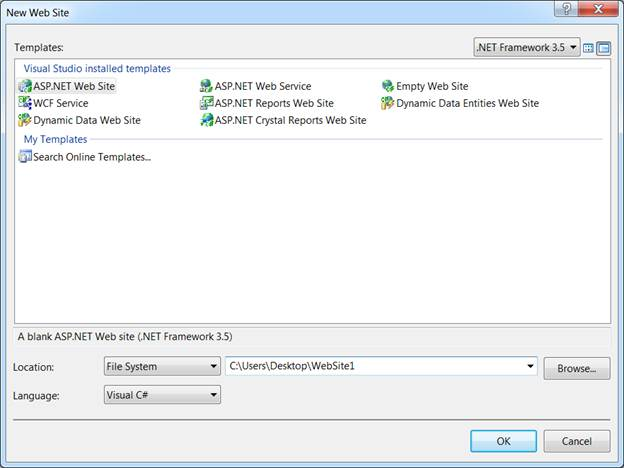
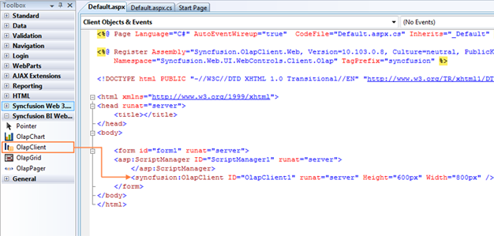
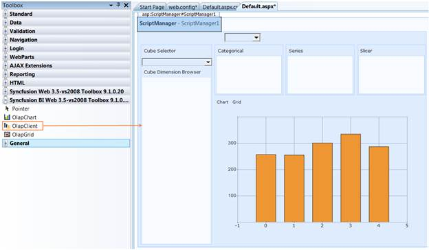
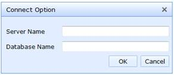

To create OLAP Client for Web:
1. Click Start à All Programs à Microsoft Visual Studio 2008.
2. Now go to File à New Website. The New Web Site dialog box appears.

Figure 5: New Web Site Dialog Box
3. Select ASP.NET Web Site in the New Web Site dialog box and click OK. A new web form gets created.
4. The OLAP Client control is now available in the toolbox under the tab named “Syncfusion BI Web 3.5–vs2008 Toolbox <Essential studio version number>”. Drag and drop the OLAP Client control onto the web form. The following assemblies will be referenced in your application for using the OLAP Client Web control.
· Syncfusion.Core
· Syncfusion.DocIO.Base
· Syncfusion.XlsIO.Base
· Syncfusion.Linq.Base
· Syncfusion.Chart.Base
· Syncfusion.Chart.Web
· Syncfusion.Shared.Base
· Syncfusion.Shared.Web
· Syncfusion.Olap.Base
· Syncfusion.OlapChart.Web
· Syncfusion.OlapGrid.Web
· Syncfusion.OlapSampleUtils
· Syncfusion.Tools.Web

Figure 6: Syncfusion BI Web 3.5–vs2008 Toolbox

Figure 7: OLAP Client in Designer
5. The Syncfusion control, client API is enhanced with ASP.NET AJAX. The ASP.NET Script Manger or Syncfusion Script Manger is required on the page in which the controls are used. The ASP.NET AJAX 3.5 is required for .NET Framework v3.5.
Adding Script Manager:
|
[ASPX] <asp:ScriptManager ID="ScriptManager1" runat="server"> </asp:ScriptManager>
|
6. The height, width and other properties of OLAP Client control are set either through the property window or manually in the source code as well as in the code behind region.
For example, the height and width property set in the source code region is shown below:
|
[ASPX] <asp:ScriptManager ID="ScriptManager1" runat="server"> </asp:ScriptManager> <Syncfusion: OlapClient ID="OlapClient1" Height="600px" Width="800px" runat="server" > </Syncfusion: OlapClient >
|
7. Once the OLAP Client control is defined, navigate to the code-behind file.
8. Now to bind the OLAP Client control with cube data, the OlapDataManager is instantiated first through any one of the following methods in the page load event. Then it is assigned to client controls OlapDataManager and finally the Databind() method is called.
Binding OLAP Client to the Server:
|
[C#] OlapDataManager olapDataManager = new OlapDataManager(connectionString); this.olapClient1.OlapDataManager = olapDataManager; this.olapClient1.DataBind(); |
|
[VB] Dim olapDataManager As OlapDataManager = New OlapDataManager(connectionString) Me.olapClient1.OlapDataManager = olapDataManager Me.olapClient1.DataBind() |
Binding OLAP Client to the Offline Cube:
|
[C#] OlapDataManager olapDataManager = new OlapDataManager(connectionString); this.olapClient1.OlapDataManager = olapDataManager; this.olapClient1.DataBind(); |
|
[VB] Dim olapDataManager As OlapDataManager = New OlapDataManager(connectionString) Me.olapClient1.OlapDataManager = olapDataManager Me.olapClient1.DataBind() |
Binding OLAP Client to the Server using Data Provider:
|
[C#] AdomdDataProvider dataProvider = new AdomdDataProvider(connectionString); OlapDataManager olapDataManager = new OlapDataManager(dataProvider); this.olapClient1.OlapDataManager = olapDataManager; this.olapClient1.DataBind(); |
|
[VB] Dim dataProvider As AdomdDataProvider = New AdomdDataProvider(connectionString) Dim olapDataManager As OlapDataManager = New OlapDataManager(dataProvider) Me.olapClient1.OlapDataManager = olapDataManager Me.olapClient1.DataBind() |
 Tip: If the user works in
an intranet, he or she can instantiate the connection option dialog by clicking
the “Connection Option” in the toolbar.
Tip: If the user works in
an intranet, he or she can instantiate the connection option dialog by clicking
the “Connection Option” in the toolbar.
Figure 8: Connection Option in Toolbar

Figure 9: Connection Option
9. i) OLAP Grid control uses HttpHandler by default to procure data from the OLAP Server on the member drilldown and for the header cell tooltip.
ii) OLAP Chart control uses HttpHandler by default to procure the images of chart, label and legend each time.
Therefore, it’s required to include the handler in the httphandlers section of web.config file.
|
[Web.Config] <httpHandlers> ..... <add verb="GET" path="*UpdateOlap*" type="Syncfusion.Web.UI.WebControls.Grid.Olap.Handlers.OLAPDataHandler, Syncfusion.OlapGrid.Web,Version=x.x.x.x, Culture=neutral, PublicKeyToken=3d67ed1f87d44c89"/> <add path="syncfusion_generate.ashx" verb="*" type="Syncfusion.Web.UI.WebControls.Chart.ChartWebHandler,Syncfusion.Chart.Web, Version= x.x.x.x, Culture=neutral, PublicKeyToken=3d67ed1f87d44c89"/> <add path="SourceCodeTabBrowser.ashx" verb="*" type="DemoUtility.SourceCodeTabHandler,Syncfusion.DemoUtility, Version= x.x.x.x, Culture=neutral, PublicKeyToken=3d67ed1f87d44c89"/> </httpHandlers> |
 Note: x.x.x.x in the above code
snippet refers to the current version of the Essential Studio running in your
system.
Note: x.x.x.x in the above code
snippet refers to the current version of the Essential Studio running in your
system.
10. Run the application and the following output is obtained.

Figure 10: OLAP Client